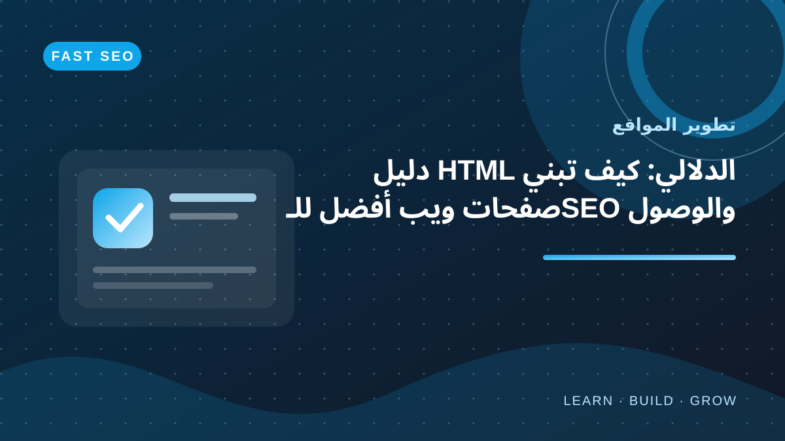
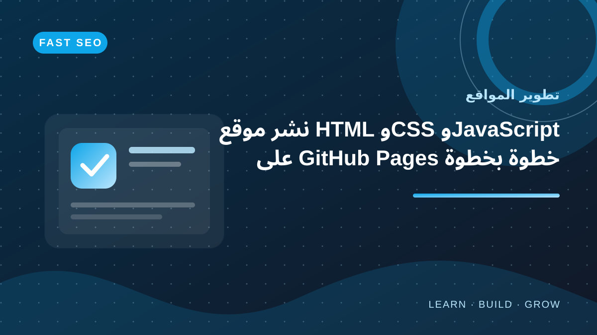

استكشف تطوير المواقع
ابدأ من تنظيم HTML الدلالي، ثم تعرّف إلى خطوات نشر موقعك وصيانته وتحسين أدائه.
جميع المقالات في تطوير المواقع
اختر مقالًا لقراءة الدليل كاملًا.
 تطوير المواقع
تطوير المواقعأنواع حقول HTML المتقدمة: date وnumber وcheckbox وradio
تعرف إلى أنواع input المناسبة لاختيار التاريخ والأرقام والخيارات المتعددة والاختيار الأحادي مع أمثلة واضحة.
اقرأ المقال تطوير المواقع
تطوير المواقعالصوت والفيديو في HTML: استخدام audio وvideo وtrack
تعلم تضمين الصوت والفيديو بعناصر HTML الأصلية وإضافة عناصر التحكم والترجمة مع مراعاة الوصول والأداء.
اقرأ المقال تطوير المواقع
تطوير المواقعكيف تتعاون HTML وCSS وJavaScript في صفحة الويب؟
افهم دور HTML في البنية وCSS في العرض وJavaScript في التفاعل من خلال مثال صغير قابل للتطوير.
اقرأ المقال تطوير المواقع
تطوير المواقعبنية صفحة HTML: شرح doctype وhead وbody ووسوم meta
افهم بنية مستند HTML من البداية، ودور doctype وhtml وhead وbody ووسوم meta، مع مثال عربي صحيح وأخطاء يجب تجنبها.
اقرأ المقال تطوير المواقع
تطوير المواقعالتحقق من نماذج HTML وإتاحة رسائل الخطأ
تعلم استخدام required وpattern وminlength مع رسائل خطأ مفهومة وتجربة نموذج يمكن الوصول إليها.
اقرأ المقال تطوير المواقع
تطوير المواقعنماذج HTML للمبتدئين: input وlabel وbutton والتحقق الأساسي
تعلم إنشاء نموذج HTML واضح وسهل الوصول، مع label وinput وأنواع الحقول والأزرار وخصائص التحقق المدمجة وأفضل الممارسات.
اقرأ المقال تطوير المواقع
تطوير المواقعخصائص HTML العامة: id وclass وlang وdata-* وhidden
شرح الخصائص العامة التي يمكن استخدامها مع عناصر HTML لتنظيم المحتوى وربطه بالأنماط والسلوك البرمجي.
اقرأ المقال تطوير المواقع
تطوير المواقععنصر iframe في HTML: التضمين والأمان والخصوصية
تعرف إلى iframe وخصائص title وloading وsandbox ومتى ينبغي تجنب تضمين محتوى خارجي.
اقرأ المقال تطوير المواقع
تطوير المواقعإمكانية الوصول في HTML: لوحة المفاتيح والتركيز وقارئات الشاشة
خطوات عملية لتحسين وصول صفحات HTML باستخدام العناصر الأصلية وتسميات واضحة وترتيب تركيز منطقي.
اقرأ المقال تطوير المواقع
تطوير المواقعروابط HTML والمسارات: الروابط الداخلية والخارجية والملفات
افهم href والمسارات النسبية والمطلقة وكيف تكتب روابط واضحة وآمنة داخل مواقع HTML.
اقرأ المقال تطوير المواقع
تطوير المواقعالقوائم والصور في HTML: أمثلة عملية مع النص البديل
تعلم إنشاء القوائم المرتبة وغير المرتبة وقوائم التعريف، وإضافة الصور في HTML مع alt مناسب وأبعاد تساعد على تجربة أفضل.
اقرأ المقالتطوير المواقعمشروع HTML متكامل للمبتدئين: بناء موقع من عدة صفحات
طبّق دروس HTML في مشروع صغير متعدد الصفحات يتضمن التنقل والمقالات والصور ونموذج تواصل وبنية قابلة للصيانة.
اقرأ المقالتطوير المواقعأداء HTML: التحميل الكسول وdefer وpreload وقياس السرعة
تحسين تحميل موارد الصفحة باستخدام خصائص HTML المناسبة مع فهم trade-offs وتجنب التحسينات العشوائية.
اقرأ المقالتطوير المواقعالصور المتجاوبة في HTML: srcset وsizes وpicture
تعلم اختيار الصور المناسبة لأحجام الشاشات وكثافات العرض باستخدام srcset وsizes وpicture.
اقرأ المقالتطوير المواقععناصر HTML الدلالية: استخدام header وmain وnav وarticle
تعرف إلى العناصر الدلالية في HTML وكيف تختار البنية المناسبة لتحسين وضوح الصفحة وإمكانية الوصول.
اقرأ المقال تطوير المواقع
تطوير المواقعأساسيات SEO في HTML: title وdescription وcanonical والبيانات المنظمة
تعلم ضبط عناصر head المهمة لمحركات البحث مع أمثلة عملية وتجنب التكرار والتصريحات المضللة.
اقرأ المقال تطوير المواقع
تطوير المواقعالجداول في HTML: th وtd وcaption وتنظيم البيانات
تعلم إنشاء جداول HTML مفهومة باستخدام caption وthead وtbody وth مع تحسين الوصول على الشاشات الصغيرة.
اقرأ المقالتطوير المواقعالعناوين والفقرات والروابط في HTML: بناء محتوى سهل القراءة
تعلم تنظيم النصوص بعناوين HTML من h1 إلى h6، واستخدام الفقرات والروابط القابلة للوصول، مع أمثلة وأخطاء شائعة.
اقرأ المقالتطوير المواقعالتحقق من HTML وتصحيح الأخطاء: W3C وأدوات المتصفح
تعلم اكتشاف أخطاء بنية HTML والروابط والخصائص باستخدام أدوات التحقق وفحص DOM في المتصفح.
اقرأ المقال تطوير المواقع
تطوير المواقعما هي لغة HTML؟ دليل البداية لبناء أول صفحة ويب
تعرف على لغة HTML ودورها في بناء صفحات الويب، وكيف تكتب أول ملف HTML وتشغّله في المتصفح خطوة بخطوة، مع أمثلة عملية للمبتدئين.
اقرأ المقالتطوير المواقعاستخدام Fetch API في JavaScript: التعامل الصحيح مع الاستجابات والأخطاء
تعلم طلب البيانات من API باستخدام fetch وasync/await، والتحقق من status، ومعالجة JSON والأخطاء بطريقة قابلة للصيانة.
اقرأ المقال تطوير المواقع
تطوير المواقعإمكانية الوصول في المواقع: قائمة عملية لتحسين تجربة جميع المستخدمين
قائمة عملية لتحسين الوصول إلى موقعك عبر HTML الدلالي ولوحة المفاتيح والتباين والنماذج والاختبار.
اقرأ المقال
تطوير المواقعدليل HTML الدلالي: كيف تبني صفحات ويب أفضل للـSEO والوصول
بنية HTML الدلالية وعلاقتها بالوصول ومحركات البحث.
اقرأ المقال
تطوير المواقعنشر موقع HTML وCSS وJavaScript على GitHub Pages خطوة بخطوة
دليل النشر والاستضافة على GitHub Pages.
اقرأ المقال تطوير المواقعGit وGitHub للمبتدئين: إدارة إصدارات مشاريع الويب خطوة بخطوة
دليل عملي لتعلم Git وGitHub للمبتدئين وفهم المستودعات والـcommit والفروع والمزامنة وPull Request.
اقرأ المقال تطوير المواقع
تطوير المواقعاختبار واجهة المستخدم: دليل عملي للأزرار والنماذج والتنقل
تعلم اختبار واجهات الويب يدويًا وبشكل منهجي، من حالات الأزرار والنماذج إلى التنقل ولوحة المفاتيح والتجاوب ورسائل الخطأ.
اقرأ المقالأسئلة شائعة عن تطوير المواقع
كيف أختبر تغييرات الموقع بأمان؟
اختبر التغييرات في بيئة تطوير أو معاينة، وراجع وحدة التحكم والأخطاء والروابط، واحتفظ بنسخة قابلة للاستعادة قبل النشر.
لماذا تهم عناصر HTML الدلالية؟
توضح بنية المحتوى وتساعد التقنيات المساعدة ومحركات البحث على فهم أدوار العناصر، مع استخدام كل عنصر لغرضه الصحيح.
هل يعمل الموقع على جميع المتصفحات بمجرد بنائه؟
لا؛ اختبر المتصفحات والأجهزة المستهدفة وتحقق من دعم الميزات وسلوك الواجهة وإمكانية الوصول.
راجع أدلة تصميم المواقع وأداء المواقع، واستخدم محول كيانات HTML عند الحاجة.
وسّع مهارات تطوير الويب
اربط بين بناء الواجهات والبرمجة والأداء وتحسين ظهور الموقع.